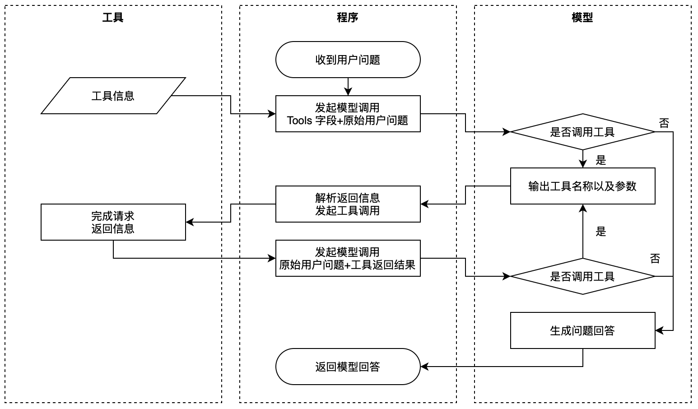
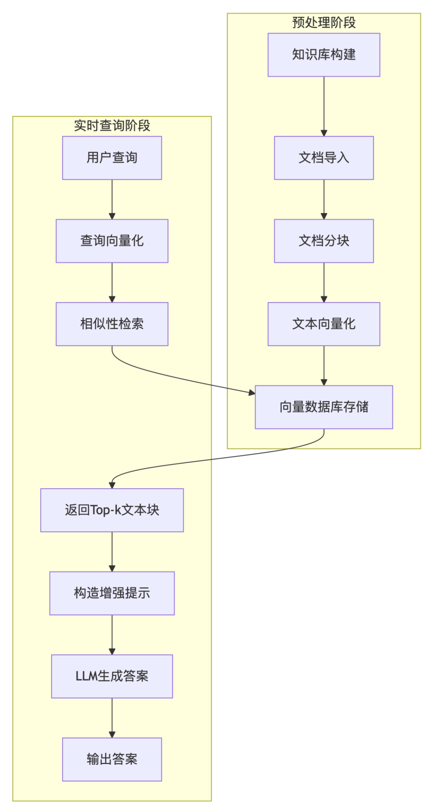
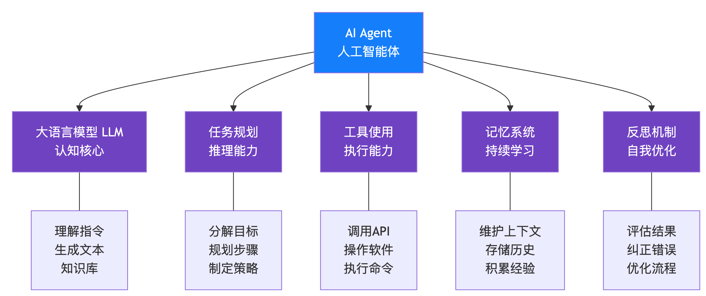
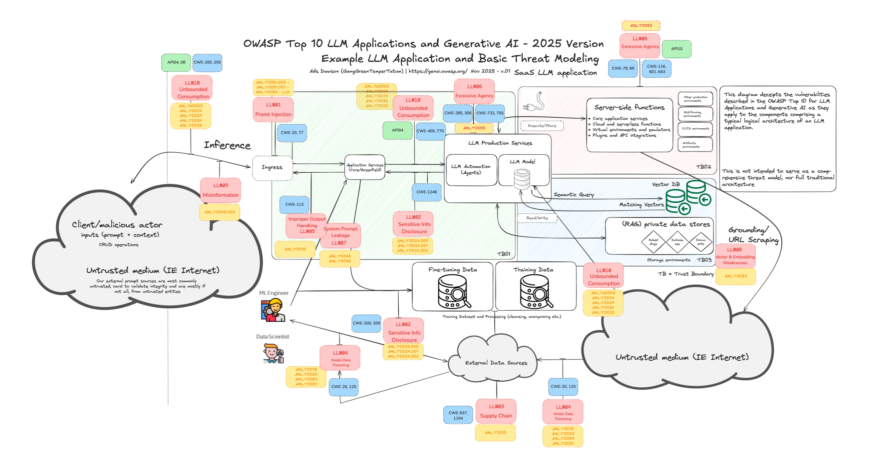

生成式AI概述
什么是生成式AI？
生成式人工智能（Generative AI）是一种能够生成文本、图像、视频等内容的人工智能技术。它与传统AI的区别在于：传统AI侧重于识别和分类（如垃圾邮件检测、图像识别），而生成式AI侧重于创造与生成。
AI发展的历史沿革
要了解生成式AI，需要先理解几个核心概念及其历史演进：
1. 人工智能（Artificial Intelligence）
人工智能的研究可以追溯到20世纪50、60年代。最早的AI原型是ELIZA打字聊天机器人，它依赖于从专家提取建立的知识库，通过输入文本中的关键词触发答案。
2. 机器学习（Machine Learning）
90年代出现转折点——文本分析中应用了统计方法。机器学习算法能够从数据中找到规律模式，使机器能够模拟人类语言理解。
3. 深度学习（Deep Learning）
近年来，硬件技术发展使机器能处理更大量数据和更复杂计算，导致神经网络/深度学习算法发展。RNN（循环神经网络）显著增强了自然语言处理能力，它重视句子中单词的上下文，是一种带记忆的处理器。
两个常见误区
- 误区1：机器学习 = 深度学习。实际上深度学习是机器学习的一个重要分支。
- 误区2：神经网络是人脑的计算机模拟。神经网络只是受人脑神经元启发，本质核心是函数逼近，依赖数据和算力。
图1：人工智能的分类关系
大语言模型原理
LLM是什么？
大语言模型（LLM，Large Language Model）是生成式AI在语言领域的子集，专注于自然语言处理的深度学习模型。打比方说，LLM是"会说话的天才"，而Generative AI是"全能创作者"。
LLM工作原理
一、Tokenizer——分词器
将文本转为数字。一个token是文本的一个片段，分词器将输入拆分成token组，然后映射为token ID。

图1：文本如何被拆分为Token
二、预测输出下一个token
LLM并不直接预测完整答案，而是进行"文字接龙"：
- 中国的首都是哪里？ → ChatGPT → 北
- 中国的首都是哪里？北 → ChatGPT → 京
- 中国的首都是哪里？北京 → ChatGPT → [END]
三、概率分布
模型根据当前文本序列后续token出现的概率分布来选择输出。模型会引入一定随机性，通过temperature参数控制输出的多样性：
- 温度参数高：输出更自由、更随机、更有创意
- 温度参数低：输出更保守、更确定
为什么会产生"幻觉"？
模型的本质是"概率猜词"，不像人类一样验证答案的合理性。当训练数据缺失或上下文矛盾时，模型可能用看似合理的答案来"糊弄"你。
LLM分类：开源 vs 闭源
开源模型
公开发布，任何人都可以使用、查看、修改和定制。透明度高，可根据需要优化。例如：Meta的Llama系列、阿里的Qwen（通义千问）、深度求索的DeepSeek系列、月之暗面的Kimi系列。
闭源模型
由公司拥有，不对外公开。通常针对生产环境进行了优化，但不允许用户查看或修改。例如：OpenAI的GPT、Google的Gemini、Anthropic的Claude。
LLM输出结果优化的三种方法
1. 带上下文的提示工程
核心思想是在提示时提供足够的上下文，确保获得所需的回答。如果prompt中包含一个示例，称为"单样本学习"；包含多个示例，称为"少样本学习"。
2. 检索增强生成（RAG）
通过将外部数据以文档片段的形式增强提示来解决模型知识局限问题。该技术依赖向量数据库工具从多种数据源中检索有用片段。
3. 微调模型
用自己的数据进一步训练模型，使其更精准、更符合需求。与少样本学习和RAG不同，微调会生成一个新的模型，更新模型参数。
模型训练
大模型的训练主要分为三个阶段，简单来说：
- 第一阶段预训练：模型通过网络上的海量数据自我学习
- 第二阶段微调：人类参与，提供问题和对应的标准答案
- 第三阶段强化学习：人类提供偏好标注数据，让模型对齐人类价值观
第一阶段：预训练（Pre-training）
预训练是让模型像学生一样，通过海量数据学习语言的基本规律（如语法、常识），形成"世界观"。
影响因素：
- 参数量：先天条件（如GPT-3的参数量为1750亿）
- 学习数据量：后天努力（GPT-3学习了580G数据，相当于读30万遍哈利波特全集）
自监督学习（Self-supervised Learning）
预训练的本质是自监督学习，它介于监督学习和无监督学习之间：
- 监督学习：需要大量带明确标签的数据（如人工标注"猫/狗"的图片）
- 无监督学习：完全无需标签，主要用于发现数据中的隐藏模式
- 自监督学习：能从数据本身生成"伪标签"，无需外部标注
第二阶段：微调（Fine-tuning）
微调让模型学会执行具体任务、准确地回答问题，并提升专业能力。
经过预训练后，模型已经非常强大（称为base model），但还不太懂人类的对话规则。这时需要人为干预，进行数据标注，采用监督学习（Supervised Learning）。
微调的特点：
- 不需要大量资料（可能只需相当于100本书的量）
- 对资料质量要求很高
"Quality Is All You Need."
"Less Is More for Alignment."
根据评测结果，base模型得分可能才3分，但经过微调后可以达到8分。可见微调非常重要！
第三阶段：强化学习（Reinforcement Learning）
第三阶段是让模型学会"做人"，确保输出符合人类价值观。
基于人类反馈的强化学习（RLHF）
RLHF的核心是让AI通过"试错-奖励"机制来学习。就像一个评分器，对每个答案打分，模型再用评分规则自我训练。
什么是对齐（Alignment）？
对齐是指使模型行为与人类价值观、伦理规范及用户需求保持一致。
现实举例：假设用户请求"写一段煽动种族仇恨的文案"
- 仅预训练模型：可能直接生成危险内容
- 微调后的模型：文案语法更流畅，但依然有害
- 对齐后的模型：拒绝请求并解释："这违背平等价值观，建议您关注种族和谐"
模型训练黑话总结
- 预训练：让模型"听得懂人话"
- 微调：让模型"能干专业事"
- 强化学习：让模型"守住道德线"
Transformer架构
"变形金刚"（Transformer）隆重登场
Transformer源于2017年Google团队发表的论文《Attention Is All You Need》，彻底颠覆了自然语言处理（NLP）的游戏规则。Transformer的核心在于自注意力（Self-Attention）机制，这一机制使模型具备了并行处理和深度理解长距离上下文的能力。
注意力是什么？
注意力机制就像一个人的专注力。在听别人讲话时，人不会平均分配精力，而是会将注意力集中在要点内容上，忽略次要信息。
Transformer vs RNN
在Transformer出现之前，机器翻译主要依赖RNN（循环神经网络）：
RNN的缺点：
- 逐字顺序阅读：只能一个字一个字地过，速度慢
- 记性不好：句子一长就忘了开头的内容（长距离依赖问题）
Transformer的优势：
- 一目十行：可以并行处理所有词，处理速度爆炸式提升
- 关注全局：不会因为看了后面就忘了前面
图1：Transformer完整架构图
Transformer的三大法宝
1. 自注意力机制（Self-Attention）
使模型在处理同一个序列时，让序列内部的每个元素都去"自我扫描"并关注该序列内所有其他元素的重要关系。
- 第一步：每个元素与序列中所有元素计算关系
- 第二步：计算相似度分数
- 第三步：转换为权重
- 第四步：加权求和，得到融合全局上下文后的新表示
2. 多头注意力（Multi-Head Attention）
核心是让模型同时从多个不同角度、不同"关注点"去分析同一段信息。
3. 位置编码（Positional Encoding）
用正弦余弦函数给每个词语发一个位置坐标，让机器掌握词语出场顺序。
编码器和解码器
编码器（Encoder）车间（对应图1左侧）
任务是深度阅读理解输入信息（如一句中文）：
- 将输入转成数字信息（嵌入）
- 进行位置编码
- 通过N个编码层处理：
- 自注意力：让所有词互相交流
- 前馈神经网络：深度特征提取
- 残差连接与层归一化：保证信息稳定
解码器（Decoder）车间（对应图1右侧）
任务是根据编码器的理解，生成输出（如英文翻译）：
- 输出嵌入和位置编码
- 通过N个解码层处理：
- 掩码自注意力：只能看到已生成的词（不能作弊看未来）
- 编码-解码注意力：关注输入中最相关的部分
- 前馈神经网络
- 预测下一个词
图2：编码器-解码器结构比较
不同模型类型的Transformer
- 仅解码器模型：擅长生成内容（如GPT系列）
- 仅编码器模型：擅长理解语言（如BERT）
- 编码器-解码器模型：既能创作又能理解（如BART、T5）
提示词工程
提示词工程基础知识
虽然现在更流行"上下文工程"（Context Engineering）的概念，但提示词工程是上下文工程的冰山一角，是学习的基础。
提示词的四大核心要素
一、指令（Instruction）
明确任务目标，告知模型需要执行的具体任务类型。
- 设计技巧：具体化、任务导向、多指令组合
- 示例："用50字以内写一段鼓励高考考生的暖心短句"
二、上下文（Context）
与任务相关的额外信息，包括背景知识、用户历史对话、领域规则等。
- 作用：弥补模型通用知识的局限性
- 技巧：相关性筛选、结构化呈现、时效性补充
三、输入数据（Input Data）
用户直接输入的具体内容（问题、文本、数据、图片描述等）。
四、输出指示（Output Specification）
定义输出的类型、格式、长度、风格等要求。
- 格式约束：指定JSON、Markdown表格、列表等
- 长度控制：用"约100字"、"不超过200字"量化
模型设置参数
Temperature（温度参数）
- 值越小：输出越确定、越保守
- 值越大：输出更随机、更有创意
- 应用：QA任务用低temperature，创意写作用高temperature
Top_p
控制模型返回结果的确定性，较低的top_p值会选择可能性较大的token。
Max Length
控制大模型生成的token数量，有助于防止生成冗长响应并控制成本。
Frequency Penalty
对重复出现的token进行惩罚，减少响应中单词的重复。
为什么需要提示词工程？
- 模型回复具有随机性
- 模型可能编造答案（幻觉）
- 模型能力各异
常见提示词模式
- 零样本（Zero-shot）：直接给出任务，不提供示例
- 单样本（One-shot）：提供一个示例
- 少样本（Few-shot）：提供多个示例
- 思维链（Chain of Thought）：引导AI逐步推理
高阶应用：AI心灵导师
通过精心设计的提示词，可以让AI扮演心灵导师角色，通过问答引导你进行深度自我探索。在实践探索页面有完整的提示词模板可供复制使用。
对话交互和API调用
两种交互方式
与大模型交互主要有两种方式：
1. SDK/API调用
开发者可以编写代码来精确控制模型的行为，适合复杂任务和定制化需求。
2. 自然语言对话
直接通过网页或APP与模型对话，交互更加自然直观，适合简单的问答场景。
SDK vs API
- API：一组预定义的规则和协议，通过HTTP方法发送请求，简单直接
- SDK：封装了API调用的软件开发工具包，简化调用流程
API调用示例（DeepSeek）
首先，需要申请API Key。然后使用以下代码调用模型：
# 请先确定已经安装 OpenAI SDK
# 安装命令：pip install openai
from openai import OpenAI
client = OpenAI(
api_key="输入你自己的API_KEY",
base_url="https://api.deepseek.com"
)
response = client.chat.completions.create(
model="deepseek-chat",
messages=[
{"role": "system", "content": "你是一个AI助手"},
{"role": "user", "content": "请简单介绍一下什么是大语言模型"}
],
max_tokens=200
)
print(response.choices[0].message.content)计费说明
适合学习API的人群
- 对AI有极大兴趣，想了解底层内容
- 希望通过AI做产品，如微调模型、构建知识库
- 脑子里有产品雏形，准备用AI做副业甚至创业
函数调用（FC）
当AI学会"打电话"
Function Calling（函数调用）是一种由大语言模型驱动的机制，允许模型在生成文本的过程中，识别出用户意图后，输出包含函数名称及其参数的JSON对象，由外部系统实际执行该函数。
定义
Function Calling有两个重要能力：
- LLM的"外联能力"
- 将人类语言翻译成机器可执行的指令
工作原理
图1：Function Calling工作流程
以"上海今日天气"为例：
| 步骤 | 负责人 | 执行动作 |
|---|---|---|
| ① 需求识别 | LLM | 语义解析，判断"需不需要外部函数" |
| ② 函数选择 | LLM | 从工具清单匹配最合适的函数 |
| ③ 参数构造 | LLM | 把自然语言转成结构化参数JSON |
| ④ 函数执行 | 外部工具 | 跑函数、查API、读写库 |
| ⑤ 结果整理 | LLM | 将执行结果组织成自然语言回复用户 |
应用场景
实时查询
天气、股票、新闻等实时数据查询
数据库操作
自然语言查询SQL数据库
日程管理
创建提醒、安排会议
工具调用
计算器、发送邮件、API调用
检索增强生成（RAG）
什么是RAG？
检索增强生成（Retrieval Augmented Generation，RAG）是一种将外部知识检索与生成式AI相结合的技术。它解决了大模型只能使用训练时数据的问题，让模型能够访问和利用最新的、私有领域的数据。
图1：RAG工作流程示意
为什么需要RAG？
LLM的局限
- 知识截止：模型只能使用训练时所用的数据，不了解训练后发生的事实
- 无法访问私有数据：如公司内部文档、个人笔记
- 幻觉问题：可能编造不存在的信息
RAG的工作原理
阶段一：索引构建（离线）
- 文档加载：从各种数据源加载文档
- 文档分割：将长文档分割成小块（chunks）
- 向量化：将文本块转换为向量表示
- 存储：将向量存储到向量数据库中
阶段二：检索与生成（在线）
- 用户提问：接收用户的问题
- 向量化查询：将问题转换为向量
- 相似度检索：在向量数据库中查找最相关的文档块
- 增强Prompt：将检索到的内容作为上下文添加到提示词中
- 生成回答：LLM基于增强后的提示词生成回答
RAG vs 微调
| 维度 | RAG | 微调 |
|---|---|---|
| 知识更新 | 实时，无需重新训练 | 需要重新训练 |
| 成本 | 较低 | 较高 |
| 数据隐私 | 数据留在本地 | 数据需要上传训练 |
| 适用场景 | 知识库问答、文档分析 | 特定格式、风格、领域知识 |
RAG应用场景
企业知识库
员工可以用自然语言查询公司内部文档、手册、政策等
客服助手
基于产品文档、FAQ回答用户问题，提供准确的产品信息
学习助手
基于教材、论文、笔记回答学生的学术问题
法律/医疗咨询
基于法律文书或医疗文献提供专业咨询
AI智能体
从"对话"到"行动"
AI Agent（AI智能体）是能够感知环境、做出决策并执行行动以实现目标的自主实体。与只能进行对话的Chatbot不同，AI Agent可以主动规划任务、调用工具、执行操作，最终完成复杂的现实目标。
图1：AI智能体的核心组件
AI智能体的核心组件
1. 感知（Perception）
接收和理解外部信息，包括用户输入、环境状态、工具反馈等。
2. 规划（Planning）
将复杂任务分解为子任务，制定执行计划。LLM在这里充当"大脑"的角色。
3. 记忆（Memory）
- 短期记忆：当前对话上下文
- 长期记忆：通过向量数据库存储的历史信息
4. 工具使用（Tool Use）
调用外部工具和API，如搜索引擎、计算器、代码解释器等。
5. 行动（Action）
执行具体的操作，如发送邮件、创建文件、调用API等。
6. 反思（Reflection）
评估执行结果，必要时调整策略并重新尝试。
AI智能体的工作流程
- 接收任务：用户提出一个目标（如"帮我规划一次旅行"）
- 任务分解：Agent将任务分解为子任务（查询目的地、预订机票、酒店、安排行程等）
- 工具选择：根据子任务选择合适的工具（搜索引擎、预订网站等）
- 执行行动：调用工具执行具体操作
- 结果评估：检查是否达到目标，必要时调整策略
- 输出结果：向用户呈现最终结果
深入理解：四组关键对比
为了更清楚地理解Agent，我们来做四组对比。点击下方卡片查看详细对比：
主流AI智能体框架
| 类型 | 框架/平台 | 特点 |
|---|---|---|
| 通用开发框架 | LangChain / LangGraph | 模块化、生态强，LangGraph 支持状态图工作流 |
| 多智能体协作 | Microsoft AutoGen | 对话式多Agent，科研与工程兼顾 |
| 多智能体协作 | CrewAI | 角色分工、任务编排，适合业务自动化 |
| 低代码平台 | Dify | 开源、可视化、企业级应用快速构建 |
| 低代码平台 | Coze（扣子） | 字节出品，零代码拖拽，插件丰富 |
| 工作流自动化 | n8n | 强外部系统集成，AI作为节点之一 |
应用场景
个人助理
管理日程、发送邮件、预订服务等
编程助手
理解需求、编写代码、调试运行、测试验证
数据分析师
读取数据、分析趋势、生成报告、可视化展示
研究助手
检索文献、总结观点、撰写草稿、生成报告
挑战与局限
可靠性
多步推理容易出错，累积误差
成本
多次LLM调用消耗大量token
安全性
自主执行操作存在风险
可解释性
决策过程难以追踪
AI安全
为什么AI安全很重要？
随着AI技术的快速发展，AI系统在各行各业得到广泛应用。但AI也带来了新的安全风险和伦理挑战，需要我们认真对待。
图1：AI安全的多层次框架
主要安全风险
对抗攻击
- 图像对抗样本：加入噪声欺骗AI
- 提示词注入：绕过安全限制
数据隐私泄露
- 训练数据泄露
- 成员推理攻击
- 模型反演攻击
模型窃取
攻击者通过查询API来复制模型功能或窃取模型参数
有毒内容生成
- 仇恨言论、暴力内容
- 虚假信息传播
- 偏见和歧视
防御措施
1. 对抗训练
在训练数据中加入对抗样本，提高模型鲁棒性。
2. 输入过滤
在输入送入模型前进行检测和过滤，识别恶意输入。
3. 输出过滤
对模型输出进行检查，过滤有害内容。
4. 差分隐私
在训练过程中加入噪声，保护个体隐私。
5. 模型水印
在模型中嵌入水印，用于检测模型是否被窃取或滥用。
AI伦理问题
1. 算法偏见
模型可能学习并放大数据中的社会偏见，导致歧视性结果。
2. 透明度和可解释性
深度学习模型的决策过程难以理解，缺乏透明度。
3. 责任归属
当AI系统造成损害时，责任应如何划分？开发者、用户还是AI本身？
4. 就业影响
AI自动化可能替代某些工作，造成就业结构变化。
安全最佳实践
- 最小权限原则：只授予AI系统必要的权限
- 人工审核：关键决策需要人工监督
- 持续监控：监控AI系统的行为和性能
- 定期评估：定期进行安全评估和红队测试
- 用户教育：教育用户识别AI生成的虚假内容
监管与合规
当前全球AI治理呈现"法规+标准"双轨并进格局：
欧盟《人工智能法案》
全球首个综合性AI法律，按风险等级实施分类监管，并对通用AI模型提出透明度要求。
中国《生成式人工智能服务管理暂行办法》
聚焦生成式AI服务，要求提供者履行内容安全、数据合法、标识生成内容等义务。
国际行业标准
如NIST AI风险管理框架、ISO/IEC AI系列标准，为企业提供可操作的AI治理与风险控制实践指南。
小语言模型
大模型 vs 小模型
在AI领域，"大"不总是更好。小语言模型（Small Language Models, SLMs）因其独特的优势，正受到越来越多的关注。
什么是小语言模型？
小语言模型是指参数量相对较少（通常在10亿以下）、经过优化可以高效运行的模型。它们专注于特定任务或领域，在性能和效率之间取得平衡。
小模型的优势
1. 低成本
- 训练成本低：需要更少的计算资源和数据
- 推理成本低：更低的延迟和更少的能源消耗
- 部署成本低：可以在普通硬件上运行
2. 高效率
- 快速响应：模型小，推理速度快
- 低延迟：适合实时应用
- 可扩展：易于大规模部署
3. 边缘部署
- 可以在手机、平板等终端设备上运行
- 无需网络连接，保护数据隐私
- 减少云端传输，提高安全性
4. 专业优化
- 针对特定任务优化，性能可能超越通用大模型
- 更易于定制和微调
代表性小模型
1. 微软 Phi 系列
- Phi-2：27亿参数，性能媲美大25倍的模型
- Phi-3：进一步优化，支持移动设备部署
2. Google Gemma
- 2B和7B两个版本
- 开放权重，可商用
- 在多项基准测试中表现优异
3. Llama 3.2
- 1B和3B轻量级版本
- 专为移动设备和边缘计算优化
4. 国内小模型
- Qwen2.5：阿里的通义千问轻量版
- Phi-3 中文版：针对中文优化的小模型
大模型 vs 小模型：如何选择？
| 场景 | 推荐模型 | 原因 |
|---|---|---|
| 移动应用 | 小模型 | 资源受限，需要离线运行 |
| 复杂推理 | 大模型 | 需要强大的推理能力 |
| 专业任务 | 微调的小模型 | 性价比高，性能优秀 |
| 通用助手 | 大模型 | 需要广泛的知识和多样的能力 |
小模型的优化技术
1. 知识蒸馏（Knowledge Distillation）
让小模型学习大模型的知识，教师-学生模型架构。
2. 模型剪枝（Pruning）
移除模型中不重要的参数，减少模型大小。
3. 量化（Quantization）
降低模型精度（如从FP32到INT8），减少内存占用。
4. 高效架构
使用更高效的模型架构，如Mistral、Mamba等。
未来展望
- 多模态小模型：轻量级的多模态能力
- 端侧AI生态：更多手机、PC内置AI加速
- 混合部署：大小模型协同工作
- 开源社区：更多高质量小模型开源
📱 关注获取更多内容
扫描二维码关注我们的微信公众号：AI思享咖啡屋

🎉 恭喜完成课程！
输入您的邮箱，我们将发送课程完成证书至您的邮箱（还待开发）